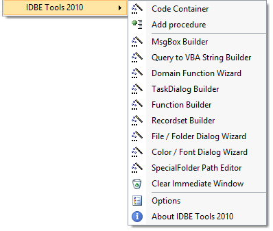

IDBE Tools 2010 - набор инструментов разработчика (Freeware)
Набор инструментов разработчика для Visual Basic Editor в:
- Microsoft Access
- Microsoft Excel
- Microsoft Word
Страница загрузки: http://www.avenius.de/en/index.php?Products:IDBE_Tools
11 Wizards and Code Builders for the Office Visual Basic Editor.
MsgBox Builder
TaskDialog Builder
Query to VBA String Builder
Domain Function Wizard
Recordset Builder
Function Builder
Code Container
File / Folder Dialog Wizard
Color / Font Dialog Wizard
Special Folder Path Editor
Clear Immediate Windows
Создаёт такое меню:

Настройки: